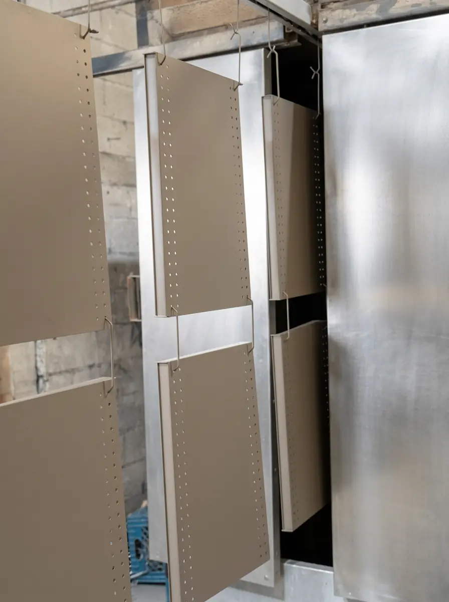

La pintura en polvo industrial es el acabado estándar para piezas metálicas fabricadas en serie: protege el metal, da un color uniforme y no usa solventes. Se aplica con carga electrostática y se cura en horno, en sectores que van de autopartes a mobiliario y construcción.
Esta guía es un mapa: te muestra dónde se usa y qué suele importar en cada industria, y te manda a la nota que desarrolla cada tema. En Steel Paint somos maquiladores de pintura en polvo en Santa Catarina, Nuevo León, y atendemos Nuevo León, Coahuila y Tamaulipas.
Si apenas conoces la tecnología, la base está en qué es la pintura electrostática y cómo funciona. Desde ahí, esta nota te lleva por industria.
Aplicaciones de la pintura en polvo industrial por sector
Automotriz y autopartes
Soportes, brackets, herrajes y componentes estructurales para proveedores Tier 1 y Tier 2. Aquí pesan la repetibilidad de color y acabado entre lotes y el cumplimiento de la especificación del cliente. Lo desarrollamos en pintura en polvo para la industria automotriz en Monterrey.
Metalmecánica y manufactura general
Carcasas, bases, guardas y estructuras de maquinaria y equipo. El acabado protege contra el desgaste y presenta el producto, y es frecuente elegir texturas que disimulan marcas de fabricación. Para ver las opciones, revisa pintura electrostática texturizada.
Mueble metálico y herrería
Sillas, estantes, lockers, barandales y estructuras donde importan el aspecto y la resistencia al uso. En exterior pesa la resina; la guía de pintura electrostática para muebles metálicos de exterior lo explica.
HVAC y refrigeración
Gabinetes, carcasas y componentes de equipos de climatización y refrigeración, donde se combinan acero y aluminio y se busca un acabado limpio y durable. Para entender qué pide cada metal, consulta pintura en polvo para metal.
Construcción y arquitectura metálica
Perfiles, puertas, marcos y estructuras que van a la intemperie, con perfiles de aluminio, acero y piezas galvanizadas. Las decisiones críticas son la preparación y el polvo de exterior; tienes el detalle en pintura electrostática para aluminio y pintura electrostática sobre galvanizado.
Cinco preguntas para elegir el sistema de pintura de tu pieza
Antes de entrar a una guía específica, responde estas preguntas. Cada una te lleva a la decisión que sigue:
- ¿Qué metal es? Cada uno pide una preparación distinta, como se ve en pintura en polvo para metal.
- ¿Dónde va a trabajar? Interior o exterior define la resina; lo explicamos en tipos de pintura en polvo.
- ¿Qué aspecto necesita? Color, brillo y textura se resuelven con las guías de colores y de acabados.
- ¿Tolera el horno y cabe en la línea? Si no, hay que evaluar otro sistema, como se explica en polvo vs líquida.
- ¿Quién la va a pintar? Si dudas entre instalar una línea o maquilar, revisa línea propia o maquila.
Qué debe incluir una especificación de pintura en polvo
Una especificación clara evita retrabajos y discusiones con tu cliente. Incluye al menos:
- El metal y su estado: acero, aluminio, galvanizado o fundición, y si trae tratamientos previos.
- El fabricante, la resina y el código del polvo, con su ficha técnica.
- El color y el brillo, con una referencia física aprobada.
- La textura, si no es lisa.
- El uso final: interior o exterior y condiciones de exposición.
- Las zonas que no deben pintarse o que requieren enmascarado.
- Los requisitos de prueba o de documentación que pida tu cliente.
Índice de guías por tema
Estas son las notas del blog agrupadas por la decisión que te toca tomar:
- Fundamentos: qué es la pintura electrostática, pintura aerostática, hidrostática y electrostática y pintura electrostática líquida
- Materiales y marcas: tipos de pintura en polvo y marcas de pintura en polvo en México
- Color y acabado: colores y carta RAL, tipos de acabados y pintura electrostática negra
- Preparación y metales: preparación de superficie y recubrimiento en polvo vs galvanizado
- Decidir cómo pintar: polvo vs líquida, ventajas y desventajas y línea propia o maquila
- Costo y proveedor: costo de la maquila y cómo elegir un maquilador en Monterrey
- Durabilidad: cuánto dura la pintura electrostática en exteriores
Del plano a la entrega: cómo fluye un proyecto y dónde se gana o se pierde la calidad
Sin importar el sector, el resultado de la pintura en polvo industrial depende de tres cosas: la preparación del metal, el polvo elegido para el uso de la pieza y el control del horneado y de las dimensiones. Cuando una de las tres falla, no hay industria que lo compense. Un proyecto suele seguir esta secuencia, aunque cada planta la adapta a su operación:
- Se define la especificación de la pieza y se cotiza.
- Se aprueba una muestra de color y acabado cuando el proyecto lo requiere.
- Se envían las piezas y se inspeccionan a su llegada.
- Se pretratan, se aplica el polvo y se hornea.
- Se hace el control de calidad dimensional y se entrega el lote.
En Steel Paint esas etapas se cubren en un mismo proceso en Santa Catarina: nuestra línea automatizada de 95 metros procesa hasta 2,300 piezas diarias, y el horno batch atiende lotes pequeños o piezas especiales.
Errores comunes en proyectos de pintura industrial
- Definir el color sin una muestra física aprobada por el cliente final.
- Cambiar de fabricante o de código de polvo a mitad del proyecto.
- Mandar piezas con grasa, óxido o residuos de soldadura sin avisar.
- No considerar el espesor del recubrimiento en roscas y ajustes.
- Dejar la pieza ensamblada con componentes que no toleran el horno.
- Decidir solo por precio sin revisar la preparación del metal ni las condiciones de curado.
Diseña la pieza pensando en el pintado
Muchos problemas de acabado se resuelven antes de fabricar, con decisiones de diseño sencillas:
- Deja un punto de sujeción claro para colgar la pieza, en una zona que no sea crítica visualmente.
- Evita cavidades profundas y esquinas cerradas, donde el polvo llega con dificultad.
- Prefiere soldaduras continuas y limpias, sin salpicaduras ni poros.
- Añade aberturas en piezas huecas para que escurran los líquidos del pretratamiento.
- Considera el espesor del recubrimiento en roscas y ajustes, y márcalos para enmascarar.
Hablar con tu maquilador antes de liberar un diseño a producción cuesta poco y evita ajustes cuando ya hay piezas fabricadas.
Qué cambia entre un prototipo y una serie
Un prototipo sirve para validar color, textura y ajuste con pocas piezas. Una serie añade otra exigencia: que el resultado se repita lote tras lote. Por eso, antes de arrancar la producción conviene fijar el fabricante, el código del polvo y una muestra aprobada, y documentar cualquier ajuste que haya surgido en las primeras piezas.
Preguntas para comparar proveedores en un proyecto industrial
Si estás evaluando a quién encargar el pintado de una serie, estas preguntas separan a un proveedor sólido de uno improvisado:
- ¿Qué preparación recibe el metal antes de pintar y cómo se controla?
- ¿Con qué fabricantes de polvo trabaja y puede mostrarte sus fichas técnicas?
- ¿Cómo valida el color y el espesor, y qué hace cuando un lote no cumple?
- ¿Qué tipo de hornos y de línea tiene, y qué volúmenes puede absorber?
- ¿Cómo gestiona los lotes pequeños y los urgentes frente a las series?
Los criterios completos para evaluar a un proveedor los desarrollamos en cómo elegir un maquilador de pintura en polvo en Monterrey.
Preguntas frecuentes sobre la pintura en polvo industrial
¿Qué es la pintura en polvo industrial?
Es la pintura en polvo aplicada con carga electrostática y curada en horno sobre piezas metálicas fabricadas para la industria. Se usa en producción en serie por su acabado uniforme, su resistencia y porque no lleva solventes.
¿En qué industrias se usa la pintura en polvo?
Se usa en automotriz y autopartes, metalmecánica, mueble metálico, HVAC y refrigeración, construcción metálica y manufactura general, entre otras. En todas el criterio es parecido: proteger el metal y dar un acabado repetible.
¿Qué piezas se pintan con pintura en polvo?
Piezas metálicas como soportes, brackets, gabinetes, carcasas, bastidores, perfiles, barandales, estanterías y estructuras de herrería. Lo que define si es adecuada es su metal, su tamaño y que tolere el horno.
¿Qué necesito para enviar mis piezas a pintar?
Los planos o medidas, el tipo de metal, la cantidad y la especificación de color, brillo y textura. Con eso, el maquilador confirma la factibilidad y cotiza.
¿Cómo elijo el acabado correcto para mi industria?
Parte de la función de la pieza y de su especificación: uso interior o exterior, desgaste esperado y lo que exige tu cliente. Las guías de este blog están organizadas para ayudarte paso a paso.
Cómo usar este mapa para decidir
Empieza por la industria y la función de tu pieza, y de ahí baja a las decisiones concretas: metal, resina, color, brillo y textura. Si en alguna de esas decisiones dudas, la guía correspondiente te da el criterio, y lo que no resuelva un artículo lo termina de aclarar una cotización con tus piezas a la vista.